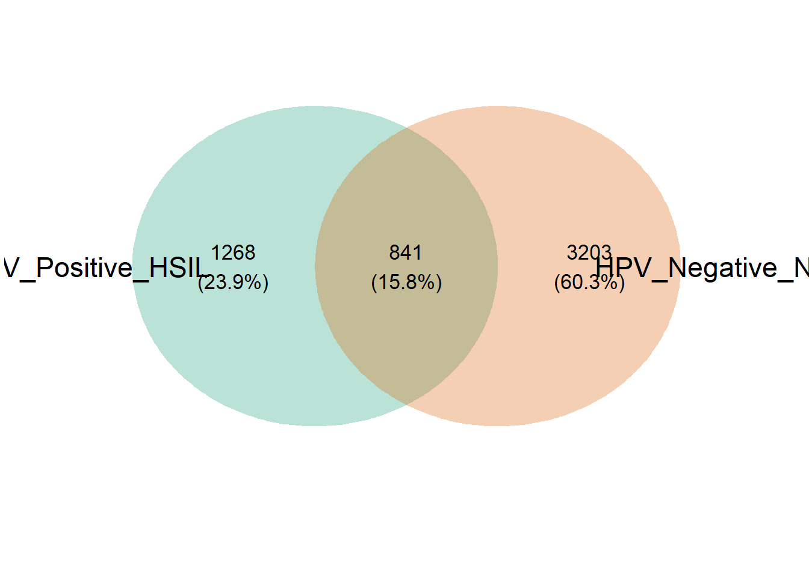
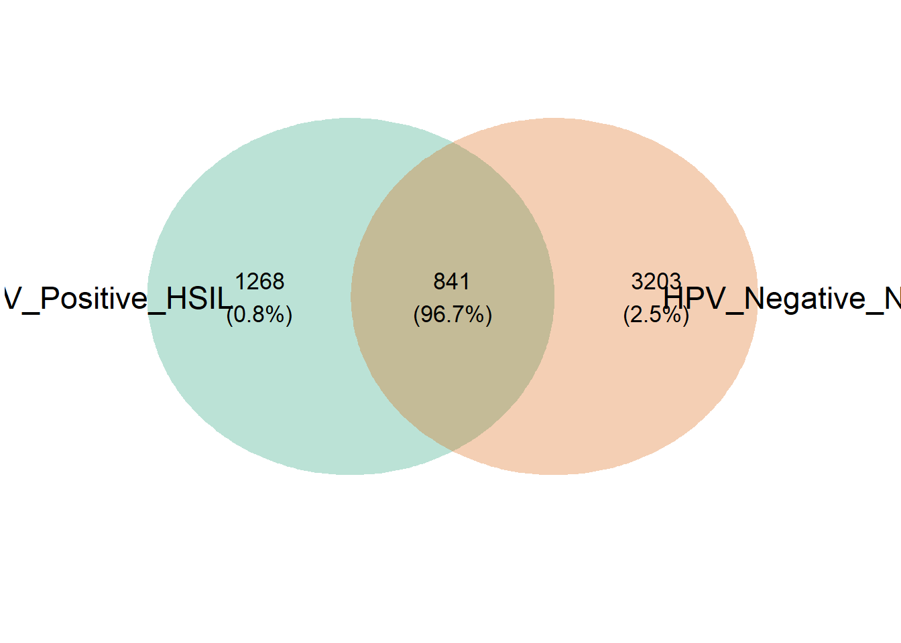
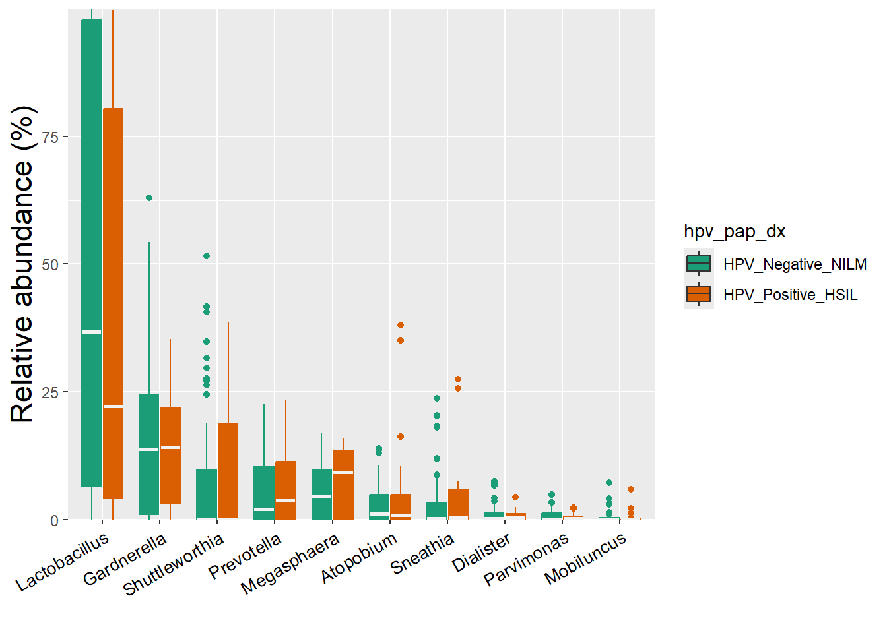
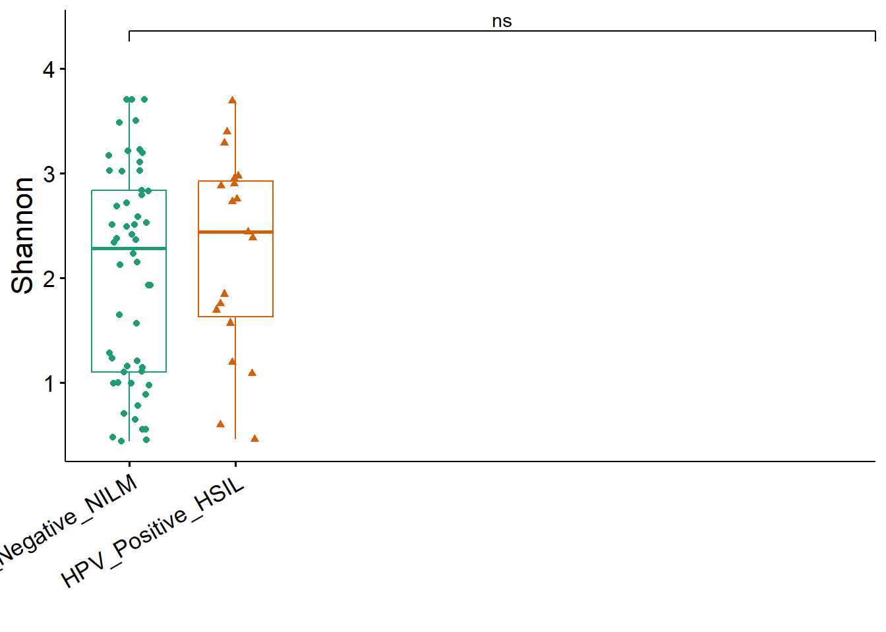

Differential Analysis of HPV_Positive_HSIL vs HPV_Negative_NILM
Venn Diagrams
These Venn diagrams illustrate the overlap of microbial features (likely Amplicon Sequence Variants - ASVs, or Operational Taxonomic Units - OTUs) across the different categories.

Relative Abundances

Diversity metrics
Alpha diversity

Differential Analysis
ERROR during LEfSe analysis:
<simpleError in private$check_taxa_number(sel_taxa, p_adjust_method): No significant feature found! To disable p value adjustment, please use p_adjust_method = "none"!>NULL